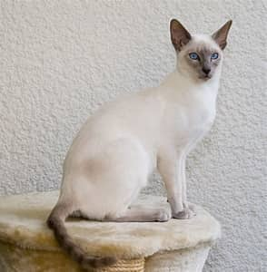

The Ragdoll is a breed of cat with a distinct colorpoint coat and blue eyes. Its morphology is large and weighty, and it has a semi-long and silky soft coat. American breeder Ann Baker developed Ragdolls in the 1960s. They are best known for their docile, placid temperament and affectionate nature.
The Siamese cat is one of the first distinctly recognised breeds of Asian cat. It derives from the Wichianmat landrace. The Siamese cat is one of several varieties of cats native to Thailand (known as Siam before 1939). The original Siamese became one of the most popular breeds in Europe and North America in the 19th century. Siamese cats have a distinctive colourpoint coat, resulting from a temperature-sensitive type of albinism.
.webp)
The Scottish Fold is a distinctive breed of domestic cat characterised by a natural dominant gene mutation associated with osteochondrodysplasia. This genetic anomaly affects cartilage throughout the body, causing the ears to "fold", bending forward and down towards the front of the head. While this trait contributes to the breed's unique appearance, often described as "owl-like"

The Bombay cat is a short-haired breed of domestic cat. Bombays are glossy solid black cats with a muscular build, and have characteristic large bright copper-golden eyes. The breed is named after the Indian city of Bombay (Mumbai), referring to the habitat of the Indian black leopard.
The Maine Coon is a long- or medium-haired cat. The coat is soft and silky, although texture may vary with coat color. The length is shorter on the head and shoulders and longer on the stomach and flanks, with some cats having a leonine ruff around their neck. Minimal grooming is required for the breed compared to other long-haired breeds, as their double coat is mostly self-maintaining owing to a light-density undercoat.
.jpg)
The Persian cat, also known as the Persian Longhair or simply Persian, is a long-haired traditional breed of cat characterised by a round face and petite, but not flat and not smashed in, muzzle. The short flat nose was created in the US from in-breeding and causes breathing difficulties in the breed, whereas , the traditional Persian breed has a petite nose which enables them to breathe without difficulties
The Sphynx cat also known as the Canadian Sphynx, is a breed of cat known for its lack of fur. Hairlessness in cats is a naturally occurring genetic mutation, and the Sphynx was developed through selective breeding of these animals, starting in the 1960s.